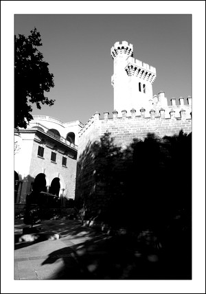

Actual Torre des Caps
La Torre des Caps
La actual “Torre des Caps” data del año 1914 y es obra de Guillem Reynés Font siendo una copia del Castellet de Perpinyà de 1909. Esta ubicada en donde se encontraba la antigua “Torre des Caps” la cual fue derruida en 1755 debido a un terremoto sufrido en Lisboa que derribó parte de la torre al llegar a Mallorca.
Su nombre es debido a que en ella se exponían, colgadas, las cabezas de los ejecutados.